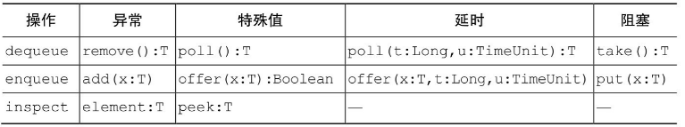
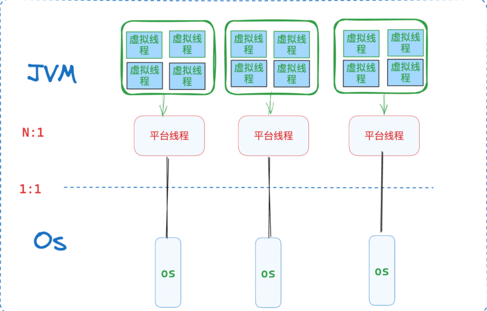
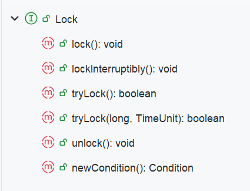

JVM并发总结¶
内存模型核心¶
上面这篇文章实在是太hardcore了，所以我放这里，只是针对其中内容作自己的思考。
CPU-Stall¶
CPU的一切优化，都是为了去掉一段CPU-Stall，也就是在等待响应(内存访问，或者是硬盘访问）的时候，如何才能防止浪费掉这么多时间片呢？
各操作浪费的CPU时间片¶
可以看到，以一个单核的主频为2500MHZ,也就是2.5GHz的CPU来说，一秒钟，可以有250亿个时钟周期，也就是时间片。
这里引申一个问题，为什么很多刷题网站会判定超时复杂度是
10^9，而且几乎是统一规定？其实可以这么思考:后台只把程序放在一个core上跑，那么纯单线程操作。如果限制一个CPU只能跑1s中给某个用户的每次提交，则需要的时间片，就是单次OP耗时 * O时间复杂度。而在不考虑特化指令情况下，常规的CPU加减乘除的指令都只会占两位数的时钟周期，则结果显然可得。
一些常见耗时列出如下:
| 运算操作 | cache访问 | 其他访问 |
|---|---|---|
| 加减:1-10个时钟周期 | l1:1-5个时钟周期 | 内存-随机访问:250个时钟周期；SSD随机访问:25万时钟周期；磁盘随机访问:2.5亿时钟周期 |
| 乘除:10-50个时钟周期 | l2：10-20个时钟周期; l3:50-100个时钟周期 | mutex-加锁解锁:60个时钟周期 |
引入cache¶
可以看到，就算是访问内存，Stall也会有200个时钟周期。
如果考虑引入cache，就会发现，在一直hit的时候，可以将Stall缩短一个数量级。
多CPU-cache一致性¶
但是由于CPU早就是多核逻辑，而多核的Cache如何保持一致呢？可以通过缓存一致性协议，比如MESI。
但是MESI中有一个逻辑，是一个CPU如果要将自己的cache修改的话，首先要将其变为invaild，但是这个操作要等到所有的CPU全部同意为止。
可以发现，Stall又出现了。
StoreBuffer和invalidQueue¶
StoreBuffer就是为了避免上面缓存一致性协议所引入的Stall。CPU又可以放到buffer中就不用管了。但是加一层非原子操作，必然又会出现问题。
同时，由于StoreBuffer很小，所以如果一直有invalid需求，如果不再加一层，就又会回退到invalid Stall。所以，CPU又加了一层invalid Queue。
内存屏障¶
内存屏障，就是为了解决StoreBuffer，以及invalid Queue所带来的不一致问题。
写内存屏障¶
等待CPU刷完所有的StoreBuffer的内存屏障指令。
读内存屏障¶
等待CPU处理完所有的invalid Queue的指令。
Java中屏障¶
LoadLoad
如果想让两个不想关的read操作，不乱序执行，则可以在其间加LoadLoad。
| Java | |
|---|---|
1 2 3 | |
LoadStore
一个read，和其不相关的write指令，则:
| Java | |
|---|---|
1 2 3 | |
StoreStore
StoreLoad
Volatile¶

Volatile写¶
对Volatile字段写，比如对value写，就是
也就是防止和其上的写重排序，防止和其后的读重排序。
StoreLoad很重要，也就是写的内容缓存同步，然后其后的读才可以处理。
| Java | |
|---|---|
1 2 3 | |
Volatile读¶
| Java | |
|---|---|
1 2 3 | |
基础¶
操作系统通过将内存虚拟化，完成了保护性与性能追求的目标，任何用户进程在想操作内存的时候使用的都是虚拟地址，单个进程拥有独立的地址空间。
但是在多核心cpu的时代，一个进程只使用单线程的方式运行，显然无法将效率达到最高。所以需要多线程编程。而多线程同时操作的都是同一个进程空间的内存，显然竞争问题不可避免。而一个JVM进程显然也有这种问题。以下讨论JVM中常见的解决办法。
内置锁与重入¶
内置锁¶
Java的内置锁机制可以支持原子性，即同步代码块，使用sychronized来标识，是一种互斥锁。任何时刻只有一个线程执行这段代码。则可以保证在这个进程空间的这段代码操作是线程安全的。
如果要同步，则需要对所有操作保护对象的路径全部进行同步，常见的操作是将可变转态全部封装到对象内部，并使用这个对象的内置锁进行同步。
重入¶
一个线程想要获取其他线程已经获得的锁的时候，就会被阻塞挂起。但是当线程获取的是自己已经获得的锁的时候，可重入锁可以保证该线程可以获得锁。也就是说，获得锁操作的粒度从细粒度的调用 变为了线程。也就是可重入性进一步对锁的行为进行了封装，简化了开发，如下例所示：
| Java | |
|---|---|
1 2 3 4 5 6 7 8 9 10 11 | |
如果创建一个specPerson实例，并调用方法，则这段代码并没有产生死锁。
可见性¶
sychronized¶
同步代码块(sychronized)等方式不仅能保证原子性，同时还有很重要的作用就是保证了内存可见性，所有的操作在解锁之前会被全部刷新会主存。一个进程中开了多个线程，其中每个核对应的cache，与主存并不是一致更新的，这其中涉及到了脏读，重排序，一致性等等问题。而如果不使用cache，性能差距将会是不同的量级。
voliate¶
但是，考虑到sychronized的粒度已经是线程的粒度，一个线程会因为没有抢到内置锁位被阻塞挂起，这所带来的线程上下文切换成本是很高的，状态的存储以及恢复在某些情况下都是不必要的。那么如果程序只需要轻量化，特定场景的可见性保证，就需要换一种方式。下面的文章是很经典的解读文章。
JVM以及其他语言通过引入voliate关键字来实现上述的效果。
作用：轻量级可见性 + 防止重排序
它的具体实现就是两个指令，将当前的结果直接刷回主存，并且使得其他线程的cahce 为 invalid，则其他线程的访问时则需要从主存重新加载。
涉及到重排序，则对voliate字段的访问指令会前后加上屏障，防止重排序。
voliate的使用场景，需要满足两个条件：
变量写操作不依赖于当前值,比如对a++就不能保证该变量不被包含在具有其他变量的不变式中
所以一般而言，voliate使用的情况只有如下两种：
- 状态标志变量
double check
首先是flag使用：
voliate 写可以挡住前面的写，voliate 读可以挡住后面的读，也就是常见的模式是：
nomal write -> voliate write
voliate read -> normal read
| Java | |
|---|---|
1 2 3 4 5 6 7 8 9 10 11 12 13 14 | |
这里的isopen完美符合要求。写入不需要参考之前的值，并且其单独发挥作用。当多个线程操作堆内存中的同一个该对象实例的时候，即使有cache，对内存中该对象的isopen也能立刻被其它线程看到，而不用sychronized。
然后是double check
| Java | |
|---|---|
1 2 3 4 5 6 7 8 9 10 11 12 13 | |
这个单例模式的实现中，使用了voliate + sychronized，具体分析如下：
首先，voliate起到剪枝的作用。如果很多线程同时到sychronized的位置，并且此时实例已经被创建完毕了，那么就都要走一次没必要的线程挂起 + 恢复，上下文切换的开销很大。显然，如果使用了voliate关键字进行判断，那么很多的线程完全没必要挂起，直接就可以及时看到变量的改变，则减少了上下文切换的开销。
如果没有使用voliate变量，而使用普通栈字段来作为剪枝条件，可能会出现如下情况：
singletion = new Singletion()的指令顺序：
- 首先，在堆中分配内存，这是所有步骤的前置要求，没有空间则无需后续操作
- 然后，关于栈中引用变量的分配，以及堆中对象的具体创建，因为重排序的出现，没有先后顺序，因为堆内存的空间已经提前被规划完毕。
而在这段代码逻辑中，重排序一旦出现，除非换写法，不然无法保证安全。
所以使用voliate加上屏障，防止重排序。
线程封闭¶
线程封闭是最简单的线程安全的实现方式，局部变量以及ThreadLocal都是线程封闭的实现。
特殊情况¶
如果在多线程环境中，一个voliate字段只被单个线程进行写入操作，其他线程全部都只读该变量，那么其实也是一种特殊的线程封闭，这种线程封闭更为强大，因为它同时提供了可见性的便利，其他线程可以实时看到变化并读取。
栈封闭¶
就是使用局部变量，不要逸出即可。
ThreadLocal¶
ThreadLocal的出现，就是给每个线程一个封闭的，贯穿线程的可变对象，其通常为static类型。
常用于数据库连接配置，以及上下文的维护。比如我在Web项目中，一个请求一个线程，而由于用户登录信息获得的JWT校验贯穿上下文，则可以使用全局ThreadLocal来维护即可实现隔离与性能提升。而在Spark数据库连接中也可以进行维护，防止一个record一个conn。Flink中由于算子有便捷的open函数，反倒使用的较少。
测试如下：
| Java | |
|---|---|
1 2 3 4 5 6 7 8 9 10 11 12 | |
核心API如下：
| Java | |
|---|---|
1 2 3 4 5 6 7 8 9 10 | |
remove的使用是必要的。
容器与工具类¶
并发容器¶
ConcurrentHashMap¶
给容器的每个方法加锁，从而实现容器的可靠并发，是常规思路。但是ConcurrentHashMap并没有这么做，不能对它加锁，并且它使用了更细粒度的加锁机制，来达到更高程度的并发。
作为权衡，它的size以及empty方法返回的实际上只能是估计值，ConcurrentHashMap将主要优化放到了get,put,containsKey,remove上。
其格额外提供了常见的原子性的API，使用的时候没必要额外重复加锁。
常见的方法如下：
| Java | |
|---|---|
1 2 3 4 5 6 7 8 9 10 11 12 13 14 15 16 17 18 19 20 21 | |
BlockingQueue¶
阻塞队列完美支持消费者-生产者模式。API分为两组：
可阻塞的put-take以及可定时的offer-poll

ArrayBlockingQueue
基于数组的有界阻塞队列，FIFO。
LinkedBlockingQueue
基于链表的可有界，可无界的队列，FIFO。通过容量参数控制，如果空参构造器，默认是一个容量为Integer.MAX_VALUE的无界队列。一般应用于消费者总比生产者效率高的情况。
线程池与虚拟线程¶
Executor框架¶
任务可以放到一个线程串行执行，也可以一任务一线程，还可以提交到一个线程池等待执行。
最为核心的工厂类就是Executors
Executor¶
Java中任务执行的主要抽象，不是Thread而是Executor，其用于执行用户提交的任务，需要传入的是Runnable接口的实现类。
通常使用Executor来避免显式的创建线程,同时实现任务的提交与执行的解耦。实现逻辑基于消费者-生产者模式。
| Java | |
|---|---|
1 2 3 4 5 6 7 8 9 10 11 12 13 14 | |
The Executor implementations provided in this package implement ExecutorService, which is a more extensive interface. The ThreadPoolExecutor class provides an extensible thread pool implementation. The Executors class provides convenient factory methods for these Executors. Memory consistency effects: Actions in a thread prior to submitting a Runnable object to an Executor happen-before its execution begins, perhaps in another thread.
ExcutorService是Executor的一个子接口，是对其的扩展。
创建
线程池的创建通过Executors工具类的静态方法可以创建,
首先，所有的线程池都采用懒加载。
newFixedThreadPoll创建一个固定长度的线程池。newSingleThreadExecutor创建单个ExecutorServicenewScheduledThreadPoll创建定时任务newCachedThreadPoll创建一个无限长的，可动态调整的线程池
提交任务
通过submit方法,可以传入callable/runnable
| Java | |
|---|---|
1 2 3 4 | |
关闭
JVM进程，只有在所有非守护线程执行完毕才会关闭。所以线程池的关闭十分重要。通常使用ExecutorService并使用它的方法来关闭。
shutdown平缓的关闭，会等待所有任务结束showdownNow立刻关闭awaitTermnation限时等待关闭。
Future¶
Executor接受的参数是Runnable实现类，但是这就代表着这个任务没有返回值，不能抛出异常。
而如果有上述需求，Callable是一个更好地选择，其有返回值或抛出异常。
首先，是JDK5的Future，其可以传入一个Callable任务来创建。
如果使用Executors，则如下：
| Java | |
|---|---|
1 2 3 4 | |
然后通过get,isDone等方式来在需要的时候同步阻塞获取结果。
CompletableFuture¶
从JDK8引入，实际上Netty等框架早于JDK已经实现了具有异步回调功能的Future，Scala也有很完备的Future实现。
创建
runAsyncsupplyAsync
其中runAsync需要传入Runnable，也就意味着没有返回值。而supplyAsync，需要传入supplier的实现类。
Supplier接口从JDK8引入，是一个函数式接口，通常使用lambda表达式进行实现，其含义是无参数并且有返回值。
两个方法均可传入用户自己创建的线程池，用于给异步任务提供线程资源。
获取结果
get,限定时间可选。join
两者的主要区别在于异常处理，一般严格异常处理的话选择get
异步回调
- 无参无返回值：
thenRun/thenRunAsync - 有参无返回值：
thenAccept/thenAcceptAsync - 有参有返回值：
thenApply/thenApplyAsync
异常处理回调
- 任务异常执行回调：
exceptionally - 任务执行完执行回调,无返回值:
whenComplete - 任务执行完执行回调，有返回值：
handle
两个任务组合回调
and关系
runAfterBoth:无参，无返回值thenAcceptBoth：有参，无返回值thenCombine：有参，有返回值
OR关系
runAfterEitheracceptEitherapplyToEither
多个任务组合回调
allOfanyOf
asyncTool¶
京东开源的框架，基于CompletableFuture封装，我的解析文章如下：
asyncTool框架梳理 - lx-bigdata (melodylx666.github.io)
线程池深入¶
与ThreadLocal¶
都知道ThreadLocal可以实现线程封闭，而线程池会复用线程，那么会出现一个问题：脏数据的读取
代码测试如下：
| Java | |
|---|---|
1 2 3 4 5 6 7 8 9 10 11 12 13 | |
这里使用的线程池是无界线程池，则没有出现脏读的情况，结果为：
thread1:null
thread2:null
但是如果换为singleThreadPoll，则结果如下：
thread1:null
thread2:thread1
解决办法就是及时remove或者不使用。
显然这是不可以出现的。比如之前做的那个Web项目，如果没有及时清理，则可能出现登录时获得的是其他人的信息。
大小¶
通常情况下，如果核心数量为n,则size = n + 1
ThreadPoolExecutor¶
官方建议的是使用封装好的线程服务，threadPoolExcutor是用来进行定制线程池的。
其构造函数如下：
| Java | |
|---|---|
1 2 3 4 5 6 7 8 | |
线程的创建和销毁
任务数量从0开始，最终可能远多于线程池的线程数量。
corePoolSize,maxPoolSize,keepAliveTime,unit共同决定了线程的创建以及销毁。
对于新来的任务，如果curSize < corePoolSize,则无论是否有其他空闲线程，都会创建新线程来执行任务。
如果corePoolSize=maxPoolSize，则相当于创建了一个固定大小的线程池
如果maxPoolSize = Integer.MAX_VALUE，则相当于创建了一个几乎无界的线程池。
管理任务的队列
通过用户提供的BlockingQueue来保存等待执行的任务。
基本的任务排队方法有3种：
unbounded queuebounded queuedirect handsoff
使用有界队列来管理，通常传入ArrayBlockingQueue，有大小参数的LinkedBlockingQueue，PriorityBlockingQueue(可以不是FIFO)作为任务队列。如果队列满了，可以使用饱和策略来应对。
而如果使用无界队列，可以使用无大小参数的LinkedBlockingQueue或者SyncQueue(只是作为桥接)。
Executors所提供的封装好的newFixedThreadPool以及newSingleThreadPool默认都使用无界队列管理任务。一般newCachedThreadPool是一个很好的选择。
如果任务之间有依赖关系，那么不应该为任务队列设置大小限制，防止线程饥饿。
饱和策略
只在使用有界队列管理任务，并且队列已经满了的情况下发挥作用。
常见的有如下几种：
Abort:直接抛弃Caller-Runs：不会抛弃任务，但是将其回退给调用execute的主线程去调用。
Caller-Runs示例如下，运行发现任务确实有在main中执行的。
| Java | |
|---|---|
1 2 3 4 5 6 7 8 9 10 11 12 13 14 15 16 17 18 19 20 21 22 23 24 25 | |
线程工厂
任务的抽象是runnable，执行载体是Thread。而线程池每次创建线程，都是使用ThreadFactory来创建。这个接口如下：
| Java | |
|---|---|
1 2 3 4 5 6 7 8 9 10 11 12 | |
则我们可以实现这个接口，并定制Thread类，然后实现自己的线程工厂。
虚拟线程¶
得物技术的分析：
异步编程的几种形式¶
下面讨论内部逻辑的不同
有栈协程
又称虚拟线程，JDK21与Go语言的虚拟线程，以及goroutine均为有栈协程。
无栈协程
Kotlin中的实现就是无栈的。
回调语法糖
TS中的实现就是如此。
普通的Future,在安装回调的时候需要调用then等方法写在其中，但是如果层级过深，则代码清晰度大大降低。比如JDK8 CompletableFuture
但是如果可以将其像同步变量一样接住，正常操作，由编译器分析后一个个安装在future部分后面，则会方便很多。TS就是这么实现的，async + await标记一个异步方法，返回值是Future，然后正常使用即可。
而无栈协程暴露给用户的同样需要是async + await，两者都有染色问题。
但是虚拟线程就没有这个问题，并且前面的Future在用户代码级别，需要依托于线程池，而虚拟线程可以在用户代码级别完全替换掉线程池。其实现的目标就是write sync and run async
模型与API¶
线程模型
操作系统任务通过OS thread来实现，而JVM中一个Thread就是对应的一个OS thread的封装，称为平台线程。
而虚拟线程是对应Virtual Thread，是一种更轻量级的线程。其中的任务通过Carrier Thread也就是载体线程来执行。载体线程一般都是平台线程
关系如下：

实质上说，无论是在哪里的进程，还是线程，还是虚拟线程，本质上都是运行上下文的封装而已，只不过是范围的大小问题，在这里的协程，也就是更细粒度的运行上下文。
API
1.直接开始一个runnable任务
| Java | |
|---|---|
1 2 3 4 5 6 7 8 9 10 | |
2.手动执行
| Java | |
|---|---|
1 2 3 4 5 6 7 8 9 10 11 12 | |
3.通过线程工厂创建
| Java | |
|---|---|
1 2 3 4 5 6 7 8 9 10 11 12 13 | |
4.通过工具类
这里底层思路就是和自定义线程池一致，但是JDK已经封装好了，线程池创建线程的时候直接通过线程工厂创建虚拟线程就可以了。同时还可以不止传递runnable，也可以传递callable
| Java | |
|---|---|
1 2 3 4 5 6 7 8 9 10 11 12 | |
底层原理¶
如果使用常规的线程模型，则为1:1模型，则大量的平台线程调度，就等用于大量的内核线程调度，会导致大量的上下文切换，状态的保存与恢复现场的成本是很高的。
而如果将任务所需要的上下文做更细粒度的封装和隔离，则出现了虚拟线程。而整个虚拟线程的核心就是上下文的抽象以及调度。
其实协程(无栈/有栈)概念比线程出现的更早，也就是协作方式的任务调度其实早于抢占方法的任务调度(线程)。其实现就是将管理权交给用户态进程管理，而不是将管理权交给OS。
核心字段如下：
| Java | |
|---|---|
1 2 3 4 | |
Continuation
其是Java中对协程的抽象，是有栈协程(有一个stackChunk成员变量,被存储到了堆中)。用户传入task之后，被封装为Continuation，然后该任务就可以被执行，挂起，唤醒，执行。
Demo如下：
| Java | |
|---|---|
1 2 3 4 5 6 7 8 9 10 11 12 13 14 15 16 17 18 | |
其中在一个ContinuationScope中，可以有多个Continuation。
JVM中使用一个链表结构维护Continuation链，当执行链上的一个Continuation发生yield的时候，控制权会被交给交回给顶层的线程，由它控制是否继续run
而VirtualThread对Continuation进行了简单封装，底层的虚拟线程调度就是使用Continuation的run & yield
Scheduler
就是一个Executor，用于维护线程池，也就是一组平台线程，来执行一个个的虚拟线程的任务。
具体来说，当虚拟线程需要被执行的时候，会将Continuation对象，拷贝到平台线程的栈中，然后执行。
而需要卸载的时候，将Continuation对象存储到堆中。这里的Continuation中维护有线程运行的stack信息。
从而实现了更细粒度，更轻量级的线程调度，而不是开销大的平台线程上下文切换，即内核上下文切换。
需要注意
上下文加载到载体线程之后，如果yield失败，而此时正好在sychronized方法中，则两者被绑定，虚拟线程的阻塞在这里就等同于载体线程的阻塞。
而在一个虚拟线程的任务可以在yield前后被执行在不同的载体线程，因为Continuation有足够的上下文信息，只需要挂载即可。
性能与不足¶
虚拟线程为byte级别，而平台线程为KB级别，基本上差一个数量级。
适用于IO密集型场景。
不足：
- 需要从
sychronized替换为reentrantLock - 使用
ThreadLocal会有问题
锁与无锁¶
在JDK5之后出现了ReentrantLock，是一种内置锁的补充。
Lock & ReentrantLock¶
Lock¶
Lock从JDK5开始提供，是一个提供了无条件，可轮询，定时，以及可中断的锁获取操作的接口。其可以控制锁的释放顺序，是一种更灵活，更细粒度的锁接口。

ReentrantLock¶
无条件获取锁
其实一个Lock接口的实现类，提供了和Sychronized一样的互斥性，以及内存可见性，并且是一个可重入锁，且通过lock & unlock来实现手动加锁。
| Java | |
|---|---|
1 2 3 4 5 6 7 8 9 10 11 12 13 14 15 16 17 18 19 20 21 22 23 24 25 26 27 28 | |
而虚拟线程也不能使用内置锁而只能使用ReentrantLock
轮询锁与定时锁
该锁还有定时机制，防止死锁造成的危害。通过tryLock方法，对常规的死锁情况，如果不能两个锁同时获取，则会放弃所有锁，回退并重试。
公平与非公平
可以创建默认的非公平锁，来保证性能，减少上下文切换的损耗，或者创建一个公平锁。通过fair布尔值来控制。
原子变量¶
悲观锁与乐观锁¶
悲观锁就是需要强制加锁，如内置锁，ReentrantLock
而乐观锁不需要强制加锁，比如原子变量
原理¶
底层通过硬件指令：Compare ans Set进行支持，这个是一个原子指令。由于系统状态不会回退，则最终可以保证任务完成。
原子变量类是一种很细粒度的竞争，相当于一个泛化的voliate变量。
ABA问题
也就是当线程A在进行操作x的时候，线程B已经将x从a -> b -> a，但是A却无法察觉。
解决办法：加版本号即可。
使用¶
最经常使用的就是getAndincreasement，有经典的使用以后再总结。